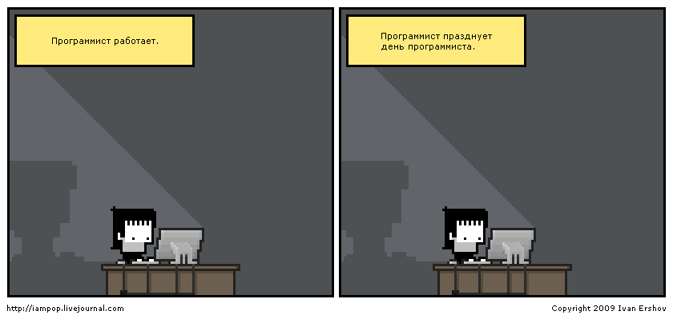

30
Вчера разменял четвертый десяток.
Вот так вот.
Вчера разменял четвертый десяток.
Вот так вот.

Outrun 53:03, ~121M
Динамичный прогрессив-хаус с элементами техно. Треклист:
Бросил в Селекшины. Приятного прослушивания :)

@via max mazin
Кайфовый!
Три года назад он собирался провести IPO Евросети, но сложилось все немного иначе.
@via Duka
via duka
А вот у него еще совершенно блестящее "Major vs. Minor" :)
И Soft Power, кстати, тоже кайфовый!